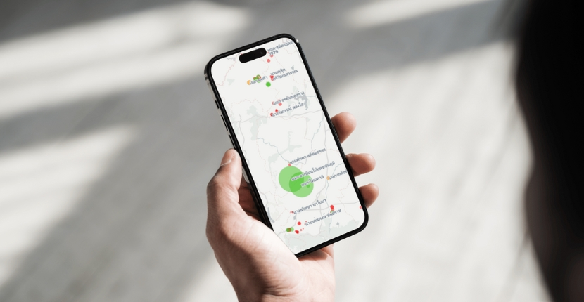

how we work
เราทำงานแบบไหน
PI มีกระบวนการทำงานหลัก 3 รูปแบบด้วยกัน

People
เราทำงานกับคน ตั้งโจทย์ แก้ปัญหาร่วมกัน ด้วยกระบวนการปรึกษาหารือ

Data
เราทำงานผ่านข้อมูล รวบรวมข้อมูล วิเคราะห์เชื่อมโยงข้อมูล สร้างฐานข้อมูลเปิด

Technology
เราทำงานด้วยเทคโนโลยีการสื่อสาร เพื่อระดมสรรพกำลังของสังคม และวิทยาศาสตร์พลเมือง